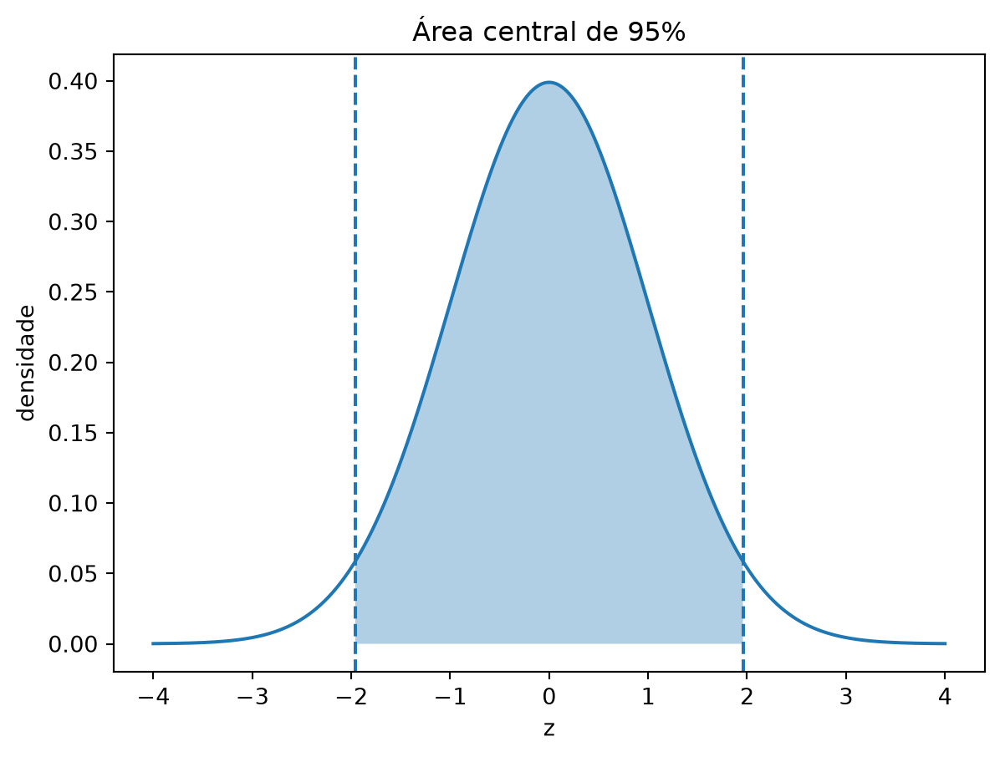
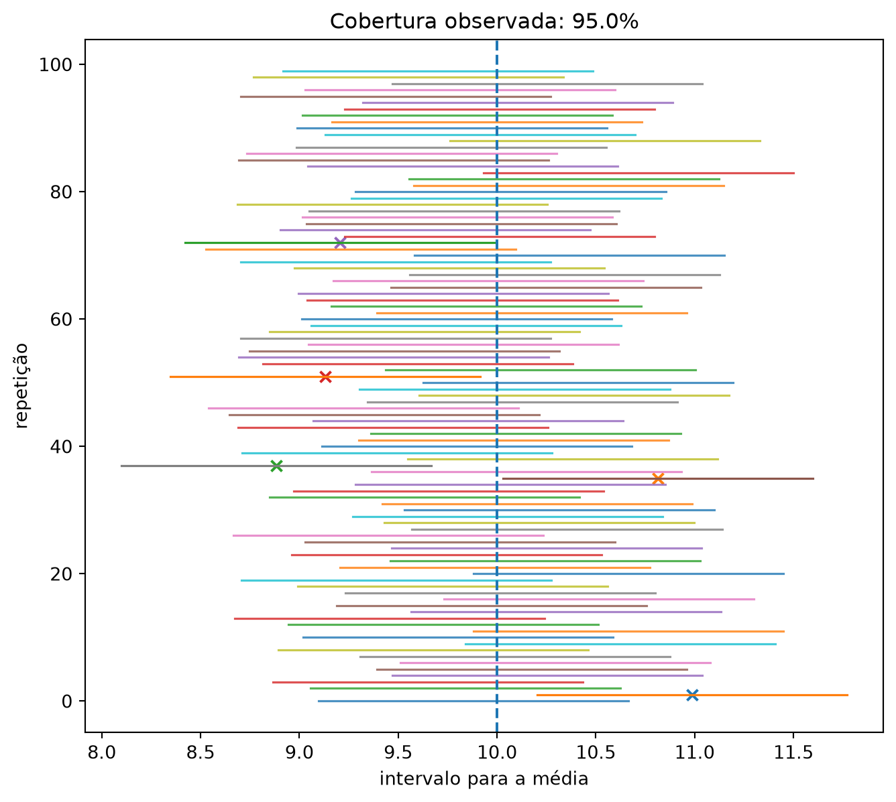

7 Estimação intervalar
A estimação pontual associa a cada amostra um único valor para representar um parâmetro desconhecido. Embora esse valor seja informativo, ele não expressa, por si só, a variabilidade amostral nem a precisão do procedimento de estimação. A estimação intervalar complementa a estimativa pontual por meio de um conjunto de valores compatíveis com os dados e com o modelo estatístico adotado.
No paradigma frequentista, o parâmetro é considerado fixo e desconhecido, enquanto os limites do intervalo são estatísticas e, portanto, variam de amostra para amostra. Essa distinção é essencial para a definição e a interpretação de intervalos de confiança (Cox, 2006, pp. 66–69; Rice, 2007, sec. 8.5.3).
ImportanteObservação — por que a estimativa pontual não é suficiente?
Em modelos contínuos, frequentemente ocorre \(P_\theta(\widehat\theta=\theta)=0\). Essa afirmação, contudo, não é universal: em problemas discretos, um estimador pode coincidir com o parâmetro com probabilidade positiva. A motivação geral para a estimação intervalar não é a impossibilidade de acerto exato, mas a necessidade de quantificar a incerteza associada ao procedimento de estimação.
Objetivos do capítulo
Ao final deste capítulo, o leitor deverá ser capaz de:
- definir conjuntos e intervalos de confiança por meio de sua função de cobertura;
- interpretar corretamente o nível de confiança no paradigma frequentista;
- construir intervalos exatos a partir de quantidades pivotais;
- distinguir procedimentos exatos, conservadores e assintóticos;
- aplicar intervalos normais, \(t\), qui-quadrado, de Wilson e de Clopper–Pearson;
- reconhecer as limitações dos intervalos de Wald e dos métodos bootstrap;
- relacionar intervalos de confiança, testes de hipóteses, precisão e tamanho amostral.
7.1 Definição formal
Considere uma amostra aleatória \(\mathbf{X}=(X_1,\ldots,X_n)\) cuja distribuição pertence a uma família \(\{P_\theta:\theta\in\Theta\}\). Um conjunto de confiança é uma função \(C(\mathbf{X})\) que associa a cada amostra um subconjunto aleatório de \(\Theta\).
NotaDefinição — conjunto de confiança
O conjunto \(C(\mathbf{X})\) é um conjunto de confiança de nível pelo menos \(1-\alpha\) para \(\theta\) quando
\[P_\theta\{\theta\in C(\mathbf{X})\}\geq 1-\alpha, \qquad \text{para todo }\theta\in\Theta.\]
Quando a igualdade vale para todo \(\theta\in\Theta\), diz-se que o procedimento possui cobertura exata. Quando a igualdade vale apenas assintoticamente ou por aproximação, o intervalo é denominado aproximado ou assintótico. Se a cobertura é maior ou igual ao nível nominal, mas não necessariamente igual, o procedimento é chamado conservador (Lauritzen, 2023, sec. 6.2; Cox, 2006, sec. 5.4).
Para um parâmetro escalar, é comum escrever
\[C(\mathbf{X})=[L(\mathbf{X}),U(\mathbf{X})],\]
em que \(L\) e \(U\) são, respectivamente, os limites inferior e superior de confiança. A função
\[c(\theta)=P_\theta\{L(\mathbf{X})\leq \theta\leq U(\mathbf{X})\}\]
é denominada função de cobertura do procedimento. Em problemas discretos, pode ser impossível construir intervalos não aleatorizados com cobertura exatamente constante; nesses casos, intervalos denominados exatos são usualmente construídos para garantir cobertura de pelo menos \(1-\alpha\) e tendem a ser conservadores (Rasch; Schott, 2018, pp. 144–146).
7.2 Interpretação frequentista
Antes da observação da amostra, \(L(\mathbf{X})\) e \(U(\mathbf{X})\) são variáveis aleatórias. O nível de confiança descreve o desempenho do procedimento em repetições hipotéticas do experimento.
DicaInterpretação correta
Um procedimento com cobertura exata de \(95\%\) produz intervalos que contêm o verdadeiro parâmetro em \(95\%\) das repetições, no longo prazo. Em um procedimento conservador de nível \(95\%\), essa proporção é de pelo menos \(95\%\). Em ambos os casos, a interpretação pressupõe que o modelo e o plano amostral estejam corretamente especificados.
Depois de observados os dados, obtém-se um intervalo numérico \([l,u]\). Nesse momento, tanto \(\theta\) quanto \([l,u]\) são fixos: o parâmetro pertence ou não pertence ao intervalo. Assim, no sentido frequentista estrito, não se deve afirmar
“A probabilidade de \(\theta\) pertencer ao intervalo observado é \(0{,}95\).”
A expressão “estamos \(95\%\) confiantes” é uma forma abreviada de se referir à propriedade de cobertura do método empregado, e não a uma distribuição de probabilidade atribuída ao parâmetro (Cox, 2006, secs. 5.3–5.4; Chihara; Hesterberg, 2022, pp. 201–205).
AvisoIntervalo de confiança e intervalo de credibilidade
Um intervalo de credibilidade bayesiano é construído a partir da distribuição posterior do parâmetro e admite uma interpretação probabilística condicional aos dados e ao modelo bayesiano. Um intervalo de confiança frequentista é definido por sua cobertura sob amostragens repetidas. Os dois conceitos não são intercambiáveis, ainda que possam produzir limites numericamente semelhantes em alguns modelos.
7.3 Quantis e valores críticos
Se \(Z\sim N(0,1)\) e \(z_q\) denota o quantil de ordem \(q\), então
\[P(Z\leq z_q)=q.\]
Pela simetria da distribuição normal padrão,
\[z_{\alpha/2}=-z_{1-\alpha/2}\]
e, portanto,
\[P\left(-z_{1-\alpha/2}\leq Z\leq z_{1-\alpha/2}\right)=1-\alpha.\]
Para \(1-\alpha=0{,}95\), tem-se \(z_{0{,}975}\approx1{,}96\).
7.4 Construção por quantidade pivotal
Uma das estratégias mais importantes para construir intervalos de confiança consiste em encontrar uma quantidade cuja distribuição não dependa de parâmetros desconhecidos.
NotaDefinição — quantidade pivotal
Uma função dos dados e do parâmetro
\[Q=Q(\mathbf{X},\theta)\]
é uma quantidade pivotal quando sua distribuição, sob \(P_\theta\), não depende de \(\theta\) nem de outros parâmetros desconhecidos. Como \(Q\) depende de \(\theta\), ela não é, em geral, uma estatística no sentido estrito.
Se \(q_{\alpha/2}\) e \(q_{1-\alpha/2}\) são quantis da distribuição de \(Q\), então
\[P_\theta\left(q_{\alpha/2}\leq Q(\mathbf{X},\theta) \leq q_{1-\alpha/2}\right)=1-\alpha.\]
Resolvendo as desigualdades em relação a \(\theta\), obtêm-se os limites de confiança. O intervalo resultante não precisa ser simétrico, não precisa estar centrado em \(\widehat\theta\) e, em certos problemas, nem sequer precisa conter o estimador de máxima verossimilhança (Lauritzen, 2023, sec. 6.2; Ramachandran; Tsokos, 2021, pp. 215–219).
7.4.1 Procedimento geral
- Identifique o parâmetro de interesse e um estimador adequado.
- Encontre uma quantidade pivotal \(Q(\mathbf{X},\theta)\).
- Selecione quantis que concentrem probabilidade \(1-\alpha\).
- Inverta as desigualdades para isolar \(\theta\).
- Verifique se os limites pertencem ao espaço paramétrico.
- Declare as hipóteses necessárias e interprete o resultado em termos do problema.
7.5 Intervalos para parâmetros da distribuição normal
7.5.1 Média com variância conhecida
Suponha que
\[X_1,\ldots,X_n\overset{\mathrm{i.i.d.}}{\sim}N(\mu,\sigma^2),\]
com \(\sigma^2\) conhecida. Como
\[\overline X\sim N\left(\mu,\frac{\sigma^2}{n}\right),\]
segue que
\[Z=\frac{\overline X-\mu}{\sigma/\sqrt n}\sim N(0,1).\]
Logo, um intervalo exato de nível \(1-\alpha\) para \(\mu\) é
\[\boxed{ \overline X\pm z_{1-\alpha/2}\frac{\sigma}{\sqrt n} }.\]
Esse intervalo é exato sob normalidade. Se a população não for normal, a mesma expressão pode ser usada como aproximação quando a distribuição de \(\overline X\) for adequadamente aproximada pela normal. Não existe um valor universal de \(n\) que garanta essa aproximação: a qualidade depende, entre outros fatores, da assimetria, do peso das caudas e da independência das observações (Rice, 2007, sec. 8.5.3; Chihara; Hesterberg, 2022, sec. 4.3.3).
NotaExemplo — média com variância conhecida
Considere os dados
\[12,15,14,10,13,16,14,15\]
provenientes de uma população normal com desvio-padrão conhecido \(\sigma=2{,}5\). Tem-se \(n=8\) e \(\overline x=13{,}625\). Para um intervalo de \(95\%\),
\[13{,}625\pm1{,}96\frac{2{,}5}{\sqrt 8} =13{,}625\pm1{,}732.\]
Portanto,
\[IC_{95\%}(\mu)=[11{,}893;15{,}357].\]
Interpretação: o método utilizado tem cobertura de \(95\%\) sob o modelo normal com \(\sigma=2{,}5\).
Base metodológica: (Rice, 2007, pp. 279–281; Larsen; Marx, 2012, pp. 297–311).
import numpy as np
from scipy.stats import norm
x = np.array([12, 15, 14, 10, 13, 16, 14, 15])
sigma = 2.5
alpha = 0.05
n = len(x)
xbar = x.mean()
z = norm.ppf(1 - alpha / 2)
me = z * sigma / np.sqrt(n)
intervalo = (xbar - me, xbar + me)
print(f"média = {xbar:.3f}")
print(f"IC 95% = ({intervalo[0]:.3f}, {intervalo[1]:.3f})")média = 13.625
IC 95% = (11.893, 15.357)7.5.2 Média com variância desconhecida
Se
\[X_1,\ldots,X_n\overset{\mathrm{i.i.d.}}{\sim}N(\mu,\sigma^2)\]
com \(\mu\) e \(\sigma^2\) desconhecidos, então
\[T=\frac{\overline X-\mu}{S/\sqrt n}\sim t_{n-1},\]
em que
\[S^2=\frac{1}{n-1}\sum_{i=1}^n(X_i-\overline X)^2.\]
Assim,
\[\boxed{ \overline X\pm t_{1-\alpha/2,n-1}\frac{S}{\sqrt n} }\]
é um intervalo exato para \(\mu\) sob normalidade (Lauritzen, 2023, ex. 6.5; Rice, 2007, pp. 279–280).
ImportanteObservação — não há regra universal como \(n>30\) ou \(n>200\)
Para dados normais, o intervalo \(t\) é exato para qualquer \(n\geq2\). Para dados não normais, sua validade é aproximada e depende da distribuição e do plano amostral. Amostras grandes melhoram a aproximação em muitas situações, mas não corrigem viés de seleção, dependência, heterogeneidade não modelada ou caudas extremamente pesadas.
NotaExemplo — média com variância desconhecida
Para os mesmos oito valores, \(\overline x=13{,}625\), \(s=1{,}923\) e \(t_{0{,}975;7}=2{,}365\). Logo,
\[IC_{95\%}(\mu) =13{,}625\pm2{,}365\frac{1{,}923}{\sqrt8} =[12{,}018;15{,}232].\]
Base metodológica: (Lauritzen, 2023, ex. 6.5).
import numpy as np
from scipy.stats import t
x = np.array([12, 15, 14, 10, 13, 16, 14, 15])
alpha = 0.05
n = len(x)
xbar = x.mean()
s = x.std(ddof=1)
tcrit = t.ppf(1 - alpha / 2, df=n - 1)
me = tcrit * s / np.sqrt(n)
print(f"IC 95% = ({xbar - me:.3f}, {xbar + me:.3f})")IC 95% = (12.018, 15.232)7.5.3 Variância de uma população normal
Sob normalidade,
\[\frac{(n-1)S^2}{\sigma^2}\sim\chi^2_{n-1}.\]
Consequentemente, um intervalo exato de nível \(1-\alpha\) para \(\sigma^2\) é
\[\boxed{ \left[ \frac{(n-1)S^2}{\chi^2_{1-\alpha/2,n-1}}, \frac{(n-1)S^2}{\chi^2_{\alpha/2,n-1}} \right] }.\]
O intervalo para \(\sigma\) é obtido pela raiz quadrada dos limites. Como a distribuição qui-quadrado é assimétrica, o intervalo não é simétrico em torno de \(S^2\) (Rice, 2007, pp. 280–281).
AvisoCondição de uso
O intervalo qui-quadrado para a variância é sensível a desvios de normalidade. Em aplicações, essa hipótese deve ser examinada com atenção; amostras grandes não tornam automaticamente esse procedimento robusto a caudas pesadas ou valores discrepantes.
NotaExemplo — intervalo para a variância
Para os oito valores anteriores, \(s^2=3{,}696\) e \(n-1=7\). O intervalo de \(95\%\) para \(\sigma^2\) é
\[IC_{95\%}(\sigma^2)=[1{,}616;15{,}312].\]
Assim,
\[IC_{95\%}(\sigma)=[1{,}271;3{,}913].\]
A assimetria dos limites reflete a assimetria da distribuição qui-quadrado.
Base metodológica: (Rice, 2007, pp. 280–281).
import numpy as np
from scipy.stats import chi2
x = np.array([12, 15, 14, 10, 13, 16, 14, 15])
alpha = 0.05
n = len(x)
s2 = x.var(ddof=1)
df = n - 1
lim_inf = df * s2 / chi2.ppf(1 - alpha / 2, df)
lim_sup = df * s2 / chi2.ppf(alpha / 2, df)
print(f"IC 95% para sigma^2 = ({lim_inf:.3f}, {lim_sup:.3f})")
print(f"IC 95% para sigma = ({np.sqrt(lim_inf):.3f}, {np.sqrt(lim_sup):.3f})")IC 95% para sigma^2 = (1.616, 15.312)
IC 95% para sigma = (1.271, 3.913)7.6 Exemplo de intervalo exato por pivô: distribuição exponencial
Considere
\[X_1,\ldots,X_n\overset{\mathrm{i.i.d.}}{\sim}\operatorname{Exp}(\lambda),\]
na parametrização por taxa, com densidade
\[f(x\mid\lambda)=\lambda e^{-\lambda x},\qquad x>0.\]
Como
\[2\lambda\sum_{i=1}^nX_i\sim\chi^2_{2n},\]
um intervalo exato de nível \(1-\alpha\) para \(\lambda\) é
\[\boxed{ \left[ \frac{\chi^2_{\alpha/2,2n}}{2\sum_{i=1}^nX_i}, \frac{\chi^2_{1-\alpha/2,2n}}{2\sum_{i=1}^nX_i} \right] }.\]
NotaExemplo adaptado — taxa exponencial
Para a amostra \(2\), \(2{,}5\), \(3\), \(4\) e \(9\), tem-se \(n=5\) e \(\sum x_i=20{,}5\). O intervalo exato de \(95\%\) é
\[IC_{95\%}(\lambda)=[0{,}079;0{,}500].\]
Se o parâmetro de interesse for a média \(\theta=1/\lambda\), basta inverter os limites e trocar sua ordem:
\[IC_{95\%}(\theta)=\left[\frac{1}{0{,}500},\frac{1}{0{,}079}\right] \approx[2{,}002;12{,}627].\]
Fonte do exemplo e base metodológica: (Chihara; Hesterberg, 2022, pp. 202–204; Lauritzen, 2023, ex. 6.7).
7.7 Intervalos assintóticos e método de Wald
Suponha que um estimador satisfaça
\[\frac{\widehat\theta-\theta}{\widehat{\operatorname{EP}}(\widehat\theta)} \overset{d}{\longrightarrow}N(0,1).\]
Então, um intervalo de Wald de nível aproximadamente \(1-\alpha\) é
\[\boxed{ \widehat\theta\pm z_{1-\alpha/2} \widehat{\operatorname{EP}}(\widehat\theta) }.\]
Para estimadores de máxima verossimilhança regulares,
\[\widehat{\operatorname{EP}}(\widehat\theta) \approx\frac{1}{\sqrt{nI(\widehat\theta)}},\]
em que \(I(\theta)\) é a informação de Fisher por observação. A validade dessa aproximação depende das condições de regularidade: o parâmetro deve estar no interior do espaço paramétrico, o modelo deve ser identificável, a informação deve ser finita e positiva e a aproximação normal deve ser adequada (Rice, 2007, secs. 8.5.2–8.5.3; Lauritzen, 2023, sec. 6.4.3).
AvisoLimitações do intervalo de Wald
O intervalo de Wald pode apresentar cobertura insatisfatória em amostras pequenas, perto das fronteiras do espaço paramétrico, para distribuições muito assimétricas ou quando o erro-padrão varia fortemente com o parâmetro. Além disso, ele não é invariável a reparametrizações não lineares: construir um intervalo para \(\theta\) e transformá-lo pode produzir resultado diferente de construir diretamente um intervalo para \(g(\theta)\). Intervalos de razão de verossimilhanças, de escore ou baseados em transformações podem ser preferíveis.
7.7.1 Exemplo: média de uma distribuição de Poisson
Se
\[X_1,\ldots,X_n\overset{\mathrm{i.i.d.}}{\sim}\operatorname{Poisson}(\lambda),\]
então \(\widehat\lambda=\overline X\) e
\[\operatorname{Var}(\widehat\lambda)=\frac{\lambda}{n}.\]
Substituindo \(\lambda\) por \(\widehat\lambda\), obtém-se
\[\boxed{ \overline X\pm z_{1-\alpha/2}\sqrt{\frac{\overline X}{n}} }.\]
Esse intervalo é aproximado. Se o limite inferior for negativo, truncá-lo em zero respeita o espaço paramétrico, mas não corrige necessariamente a função de cobertura. Para contagens pequenas, métodos exatos ou baseados na razão de verossimilhanças são mais apropriados (Rice, 2007, pp. 282–283).
7.8 Intervalos para uma proporção binomial
Se \(X\sim\operatorname{Binomial}(n,p)\), então
\[\widehat p=\frac{X}{n}.\]
7.8.1 Intervalo de Wald
A substituição de \(p\) por \(\widehat p\) no erro-padrão produz
\[\boxed{ \widehat p\pm z_{1-\alpha/2} \sqrt{\frac{\widehat p(1-\widehat p)}{n}} }.\]
Embora simples, esse intervalo pode apresentar cobertura muito inferior à nominal, produzir limites fora de \([0,1]\) e degenerar quando \(x=0\) ou \(x=n\). Regras como \(n\widehat p\geq5\) e \(n(1-\widehat p)\geq5\) são apenas diagnósticos aproximados e não garantem boa cobertura, sobretudo quando \(p\) está próximo de \(0\) ou \(1\) (Ramachandran; Tsokos, 2009, pp. 302–304; Chihara; Hesterberg, 2022, pp. 211–215).
7.8.2 Intervalo de Wilson ou de escore
Se \(z=z_{1-\alpha/2}\), o intervalo de Wilson é
\[\boxed{ \frac{ \widehat p+\dfrac{z^2}{2n} \pm z\sqrt{ \dfrac{\widehat p(1-\widehat p)}{n} +\dfrac{z^2}{4n^2} } }{1+\dfrac{z^2}{n}} }.\]
Esse intervalo resulta da inversão do teste de escore e, em geral, apresenta desempenho de cobertura superior ao intervalo de Wald. Seu centro não é exatamente \(\widehat p\), especialmente em amostras pequenas (Chihara; Hesterberg, 2022, secs. 7.4–7.4.1).
7.8.3 Intervalo exato de Clopper–Pearson
Para \(0<x<n\), o intervalo bilateral de caudas iguais pode ser escrito por quantis beta:
\[L=B^{-1}_{\alpha/2}(x,n-x+1)\]
e
\[U=B^{-1}_{1-\alpha/2}(x+1,n-x),\]
em que \(B^{-1}_q(a,b)\) é o quantil de ordem \(q\) da distribuição beta com parâmetros \(a\) e \(b\). Para \(x=0\), define-se \(L=0\); para \(x=n\), define-se \(U=1\).
O método garante cobertura de pelo menos \(1-\alpha\), mas, por causa da natureza discreta da distribuição binomial, costuma ser conservador e produzir intervalos mais longos (Rasch; Schott, 2018, pp. 145–146; Rosner, 2011, pp. 186–188).
NotaExemplo — comparação de intervalos para uma proporção
Considere \(x=12\) sucessos em \(n=50\) ensaios, de modo que \(\widehat p=0{,}24\). Para \(95\%\) de confiança:
- Wald: \([0{,}122;0{,}358]\);
- Wilson: \([0{,}143;0{,}374]\);
- Clopper–Pearson: \([0{,}131;0{,}382]\).
Os resultados ilustram que métodos diferentes podem ter centros, amplitudes e propriedades de cobertura distintos.
Base metodológica: (Chihara; Hesterberg, 2022, secs. 7.4–7.4.1; Rasch; Schott, 2018, pp. 145–146; Rosner, 2011, pp. 186–188).
from statsmodels.stats.proportion import proportion_confint
x = 12
n = 50
alpha = 0.05
for metodo in ["normal", "wilson", "beta", "agresti_coull"]:
li, ls = proportion_confint(x, n, alpha=alpha, method=metodo)
print(f"{metodo:14s}: ({li:.3f}, {ls:.3f})")normal : (0.122, 0.358)
wilson : (0.143, 0.374)
beta : (0.131, 0.382)
agresti_coull : (0.142, 0.376)7.9 Intervalos unilaterais
Em algumas aplicações, interessa apenas estabelecer um limite superior ou inferior. Um limite inferior de confiança de nível \(1-\alpha\) é uma estatística \(L(\mathbf{X})\) tal que
\[P_\theta\{L(\mathbf{X})\leq\theta\}\geq1-\alpha.\]
Analogamente, um limite superior \(U(\mathbf{X})\) satisfaz
\[P_\theta\{\theta\leq U(\mathbf{X})\}\geq1-\alpha.\]
Para a média normal com variância desconhecida, os intervalos unilaterais são
\[\left[ \overline X-t_{1-\alpha,n-1}\frac{S}{\sqrt n},\infty \right)\]
e
\[\left( -\infty, \overline X+t_{1-\alpha,n-1}\frac{S}{\sqrt n} \right].\]
Intervalos unilaterais devem ser escolhidos antes da inspeção dos dados, em consonância com a pergunta científica (Chihara; Hesterberg, 2022, pp. 209–211).
7.10 Dualidade entre intervalos de confiança e testes de hipóteses
Considere uma família de testes bilaterais de nível \(\alpha\) para
\[H_0:\theta=\theta_0.\]
O conjunto de todos os valores de \(\theta_0\) que não são rejeitados constitui um conjunto de confiança de nível \(1-\alpha\):
\[C(\mathbf{x})= \{\theta_0:\text{$H_0:\theta=\theta_0$ não é rejeitada}\}.\]
Essa operação é denominada inversão de testes. No caso da média normal com variância conhecida, o teste bilateral rejeita \(H_0:\mu=\mu_0\) quando
\[\left| \frac{\overline X-\mu_0}{\sigma/\sqrt n} \right|>z_{1-\alpha/2}.\]
Os valores não rejeitados de \(\mu_0\) satisfazem
\[\overline X-z_{1-\alpha/2}\frac{\sigma}{\sqrt n} \leq \mu_0\leq \overline X+z_{1-\alpha/2}\frac{\sigma}{\sqrt n},\]
que é precisamente o intervalo de confiança correspondente (Rice, 2007, sec. 9.3).
ImportanteConsequência
Para um teste bilateral e um intervalo obtidos pela inversão da mesma família de testes, \(H_0:\theta=\theta_0\) é rejeitada ao nível \(\alpha\) se, e somente se, \(\theta_0\) não pertence ao conjunto de confiança de nível \(1-\alpha\).
7.11 Amplitude, precisão e tamanho amostral
Para um intervalo simétrico da forma
\[\widehat\theta\pm c\,\widehat{\operatorname{EP}}(\widehat\theta),\]
sua amplitude é
\[2c\,\widehat{\operatorname{EP}}(\widehat\theta).\]
Três relações gerais são importantes:
- aumentando o nível de confiança, aumenta-se o valor crítico e, em geral, a amplitude;
- aumentando a variabilidade dos dados, aumenta-se o erro-padrão e a amplitude;
- aumentando o tamanho da amostra, o erro-padrão frequentemente diminui na ordem de \(n^{-1/2}\).
Para a média com \(\sigma\) conhecida, se a margem de erro desejada é no máximo \(E\), então
\[E\geq z_{1-\alpha/2}\frac{\sigma}{\sqrt n}\]
implica
\[\boxed{ n\geq \left( \frac{z_{1-\alpha/2}\sigma}{E} \right)^2 }.\]
O resultado deve ser arredondado para o inteiro imediatamente superior (Chihara; Hesterberg, 2022, p. 215; Larsen; Marx, 2012, pp. 310–311).
Para uma proporção, usando a aproximação de Wald,
\[n\geq \frac{z_{1-\alpha/2}^2p(1-p)}{E^2}.\]
Quando não existe estimativa preliminar de \(p\), utiliza-se \(p=0{,}5\), que maximiza \(p(1-p)\) e fornece o tamanho amostral mais conservador dentro da aproximação de Wald (Chihara; Hesterberg, 2022, p. 215).
AvisoPrecisão não elimina viés
Aumentar \(n\) reduz o erro aleatório, mas não corrige amostragem não representativa, não resposta informativa, mensuração enviesada, dependência ignorada ou especificação inadequada do modelo. Um intervalo estreito pode ser sistematicamente incorreto.
7.12 Cobertura por simulação
A interpretação frequentista pode ser visualizada repetindo-se a amostragem e a construção do intervalo. Na figura a seguir, são gerados \(100\) intervalos de \(95\%\) para a média de uma população normal. Em uma repetição particular, a proporção de cobertura não precisa ser exatamente \(0{,}95\), mas tende a se aproximar desse valor quando o número de repetições aumenta (Rice, 2007, p. 281; Chihara; Hesterberg, 2022, pp. 223–224).

7.13 Métodos bootstrap
Quando a distribuição amostral do estimador é difícil de obter, o bootstrap pode aproximá-la por reamostragem com reposição da distribuição empírica. Entre os procedimentos mais comuns estão:
- o intervalo percentil, cujos limites são quantis das estimativas bootstrap;
- o intervalo baseado em erro-padrão bootstrap;
- o intervalo bootstrap-\(t\), que aproxima a distribuição de uma estatística studentizada.
O intervalo percentil é simples, mas pode apresentar problemas em presença de viés ou assimetria. Em muitos problemas regulares, o bootstrap-\(t\) apresenta melhor acurácia de cobertura, embora exija a estimação do erro-padrão em cada reamostra e possa ser computacionalmente mais oneroso. Essa superioridade não é universal. Em amostras muito pequenas, a distribuição empírica pode representar inadequadamente a população; o bootstrap não substitui condições de identificação, independência ou qualidade do plano amostral (Chihara; Hesterberg, 2022, secs. 7.5.1–7.5.3).
NotaAlgoritmo — intervalo percentil bootstrap
Para estimar um parâmetro \(\theta\) por \(\widehat\theta=s(\mathbf{X})\):
- obtenha \(B\) amostras bootstrap de tamanho \(n\) por reamostragem com reposição;
- calcule \(\widehat\theta^{*(1)},\ldots,\widehat\theta^{*(B)}\);
- use os quantis empíricos de ordens \(\alpha/2\) e \(1-\alpha/2\) como limites.
import numpy as np
rng = np.random.default_rng(2026)
x = np.array([12, 15, 14, 10, 13, 16, 14, 15])
B = 10000
alpha = 0.05
medianas_boot = np.empty(B)
for b in range(B):
xb = rng.choice(x, size=len(x), replace=True)
medianas_boot[b] = np.median(xb)
li, ls = np.quantile(medianas_boot, [alpha / 2, 1 - alpha / 2])
print(f"IC percentil bootstrap para a mediana: ({li:.3f}, {ls:.3f})")IC percentil bootstrap para a mediana: (12.000, 15.000)7.14 Intervalo de confiança não é intervalo de predição
Um intervalo de confiança para uma média descreve a incerteza sobre o parâmetro \(\mu\). Um intervalo de predição descreve a incerteza sobre uma nova observação \(X_{n+1}\) e, portanto, inclui tanto a incerteza na estimação de \(\mu\) quanto a variabilidade individual.
Para uma amostra normal com \(\sigma^2\) desconhecida, um intervalo de predição para uma nova observação é
\[\overline X\pm t_{1-\alpha/2,n-1}S\sqrt{1+\frac{1}{n}},\]
que é mais amplo do que o intervalo de confiança para \(\mu\):
\[\overline X\pm t_{1-\alpha/2,n-1}\frac{S}{\sqrt n}.\]
Confundir os dois intervalos leva a subestimar a variabilidade de observações futuras (Larsen; Marx, 2012, sec. 11.3.8).
7.15 Roteiro para construção e apresentação
Ao apresentar um intervalo de confiança, recomenda-se informar:
- o parâmetro e a população de interesse;
- o estimador e o método de construção;
- o nível de confiança;
- as hipóteses do modelo e do plano amostral;
- os limites numéricos e, quando pertinente, a margem de erro;
- uma interpretação contextual;
- limitações relevantes, como pequena amostra, assimetria, dependência ou proximidade de fronteiras paramétricas.
DicaModelo de redação
“Com base em um intervalo \(t\) bilateral de \(95\%\), estima-se que a média populacional esteja entre \(12{,}02\) e \(15{,}23\). Essa conclusão pressupõe observações independentes e uma população aproximadamente normal. O nível de \(95\%\) refere-se à cobertura do procedimento em repetições do processo amostral.”
7.16 Síntese dos principais procedimentos
| Parâmetro | Hipóteses principais | Procedimento | Natureza |
|---|---|---|---|
| \(\mu\), \(\sigma\) conhecida | amostra normal | normal padrão | exato |
| \(\mu\), \(\sigma\) desconhecida | amostra normal | \(t\) de Student | exato |
| \(\sigma^2\) | amostra normal | qui-quadrado | exato |
| taxa exponencial \(\lambda\) | amostra exponencial iid | pivô qui-quadrado | exato |
| proporção \(p\) | amostra binomial | Wilson | aproximado, geralmente preferível ao Wald |
| proporção \(p\) | amostra binomial | Clopper–Pearson | exato conservador |
| parâmetro regular \(\theta\) | condições assintóticas | Wald | aproximado |
| parâmetro geral | reamostragem representativa | bootstrap | aproximado |
7.17 Exercícios
NotaExercício 1 — interpretação
Um pesquisador obteve o intervalo \([18{,}4;22{,}7]\) para uma média populacional com nível de confiança de \(95\%\).
- Explique por que a frase “há \(95\%\) de probabilidade de a média estar no intervalo” não é uma interpretação frequentista estrita.
- Escreva uma interpretação adequada do procedimento.
- Explique quais aspectos da conclusão dependem do modelo e do plano amostral.
Exercício baseado em: (Cox, 2006, pp. 66–69; Chihara; Hesterberg, 2022, pp. 201–205).
NotaExercício 2 — média com variância conhecida
Uma amostra normal de tamanho \(n=36\) apresentou média \(\overline x=50\). Suponha \(\sigma=9\) conhecida.
- Construa intervalos de \(90\%\), \(95\%\) e \(99\%\) para \(\mu\).
- Compare suas amplitudes.
- Determine o tamanho amostral necessário para uma margem de erro máxima de \(2\) unidades em um intervalo de \(95\%\).
Exercício baseado em: (Larsen; Marx, 2012, pp. 297–311).
NotaExercício 3 — média com variância desconhecida
Considere uma amostra normal com \(n=25\), \(\overline x=4{,}2\) e \(s^2=1{,}44\).
- Construa um intervalo de \(95\%\) para \(\mu\).
- Compare-o com o intervalo que seria obtido substituindo o quantil \(t\) por \(1{,}96\).
- Explique por que o intervalo normal é mais estreito.
Exercício baseado em: (Lauritzen, 2023, ex. 6.5; Rice, 2007, pp. 279–280).
NotaExercício 4 — variância normal
Uma amostra normal de tamanho \(n=20\) apresentou variância amostral \(s^2=16\).
- Construa um intervalo de \(95\%\) para \(\sigma^2\).
- Obtenha o intervalo correspondente para \(\sigma\).
- Verifique que o intervalo para \(\sigma^2\) não é simétrico em torno de \(s^2\).
- Discuta a sensibilidade do procedimento à hipótese de normalidade.
Base metodológica: (Rice, 2007, pp. 280–281).
NotaExercício 5 — quantidade pivotal exponencial
Sejam \(X_1,\ldots,X_n\) iid com distribuição exponencial de taxa \(\lambda\).
- Demonstre que \(2\lambda\sum_iX_i\) é uma quantidade pivotal.
- Derive um intervalo bilateral de nível \(1-\alpha\) para \(\lambda\).
- Transforme o intervalo para a média \(\theta=1/\lambda\).
- Aplique o resultado à amostra \(1{,}1\), \(0{,}8\), \(2{,}4\), \(0{,}6\), \(1{,}5\) e \(3{,}0\).
Exercício baseado em: (Lauritzen, 2023, ex. 6.7).
NotaExercício 6 — intervalo de Wald para Poisson
Considere as contagens \(4\), \(6\), \(7\), \(9\), \(10\) e \(13\), modeladas como iid Poisson\((\lambda)\).
- Calcule \(\widehat\lambda\) e seu erro-padrão estimado.
- Construa um intervalo de Wald de \(95\%\).
- Discuta se a aproximação normal parece razoável.
- Explique por que a simples truncagem de um limite negativo em zero não garante cobertura nominal.
Exercício baseado em: (Rice, 2007, pp. 282–283).
NotaExercício 7 — proporção binomial
Em \(n=40\) ensaios, foram observados \(x=4\) sucessos.
- Calcule o intervalo de Wald de \(95\%\).
- Calcule os intervalos de Wilson e Clopper–Pearson com auxílio de software.
- Compare os limites e as amplitudes.
- Justifique qual método você reportaria e quais limitações registraria.
Base metodológica: (Chihara; Hesterberg, 2022, secs. 7.4–7.4.1; Rasch; Schott, 2018, pp. 145–146; Rosner, 2011, pp. 186–188).
NotaExercício 8 — intervalo unilateral
Uma amostra normal de tamanho \(n=15\) apresentou \(\overline x=120\) e \(s=18\). Construa um limite superior de confiança de \(99\%\) para \(\mu\). Explique em que tipo de pergunta científica um limite unilateral seria mais apropriado que um intervalo bilateral.
Exercício baseado em: (Chihara; Hesterberg, 2022, pp. 209–211).
NotaExercício 9 — dualidade
Considere o teste bilateral de \(H_0:\mu=\mu_0\) para uma amostra normal com variância conhecida.
- Escreva a região de não rejeição a nível \(\alpha\).
- Inverta a região para obter o conjunto dos valores de \(\mu_0\) não rejeitados.
- Mostre que o conjunto coincide com o intervalo normal de nível \(1-\alpha\).
Exercício baseado em: (Rice, 2007, sec. 9.3).
NotaExercício 10 — cobertura por simulação
Implemente uma simulação com \(10\,000\) repetições para estimar a cobertura dos seguintes procedimentos:
- intervalo \(t\) para a média quando os dados são normais;
- intervalo \(t\) para a média quando os dados são exponenciais, para \(n=10\), \(30\) e \(100\);
- intervalos de Wald e Wilson para uma proporção com \(n=20\) e \(p\in\{0{,}05,0{,}20,0{,}50\}\).
Compare a cobertura estimada com o nível nominal de \(95\%\) e interprete os resultados.
Exercício baseado em: (Chihara; Hesterberg, 2022, pp. 223–224; Ramachandran; Tsokos, 2021, pp. 248–250).
7.18 Gabarito sucinto
- O nível de confiança é propriedade do procedimento; após a amostra, o intervalo e o parâmetro são fixos.
- Use \(\overline x\pm z_{1-\alpha/2}\sigma/\sqrt n\); para a parte 3, arredonde para cima \(n\geq(z_{0{,}975}9/2)^2\).
- Use \(t_{0{,}975;24}\) e \(s=1{,}2\); o intervalo \(z\) ignora a incerteza adicional da estimação de \(\sigma\).
- Use os quantis \(\chi^2_{0{,}025;19}\) e \(\chi^2_{0{,}975;19}\); obtenha o intervalo para \(\sigma\) tomando raízes quadradas.
- Use \(2\lambda\sum_iX_i\sim\chi^2_{2n}\) e inverta os limites para \(\theta=1/\lambda\).
- \(\widehat\lambda=\overline x\) e \(\widehat{\operatorname{EP}}=\sqrt{\overline x/n}\).
- O Wald tende a ser inadequado com poucos sucessos; Wilson e Clopper–Pearson respeitam melhor a estrutura binomial, com o último geralmente mais conservador.
- Use \(\overline x+t_{0{,}99;14}s/\sqrt n\) como limite superior.
- A inversão produz \(\overline X\pm z_{1-\alpha/2}\sigma/\sqrt n\).
- Espera-se boa cobertura do intervalo \(t\) sob normalidade; assimetria e fronteiras podem degradar a cobertura de métodos aproximados, especialmente para amostras pequenas.
Referências
CHIHARA, Laura M.; HESTERBERG, Tim C. Mathematical Statistics with Resampling and R. 3. ed. Hoboken, NJ: John Wiley & Sons, 2022.
COX, D. R. Principles of Statistical Inference. Cambridge: Cambridge University Press, 2006.
LARSEN, Richard J.; MARX, Morris L. An Introduction to Mathematical Statistics and Its Applications. 5. ed. Boston: Prentice Hall, 2012.
LAURITZEN, Steffen. Fundamentals of Mathematical Statistics. 1. ed. Boca Raton, FL: CRC Press, 2023.
RAMACHANDRAN, Kandethody M.; TSOKOS, Chris P. Mathematical Statistics with Applications. Burlington, MA: Academic Press, 2009.
RAMACHANDRAN, Kandethody M.; TSOKOS, Chris P. Mathematical Statistics with Applications in R. 3. ed. London: Academic Press, 2021.
RASCH, Dieter; SCHOTT, Dieter. Mathematical Statistics. Chichester: John Wiley & Sons, 2018.
RICE, John A. Mathematical Statistics and Data Analysis. 3. ed. Belmont, CA: Duxbury Press, 2007.
ROSNER, Bernard. Fundamentals of Biostatistics. 7. ed. Boston: Brooks/Cole, Cengage Learning, 2011.